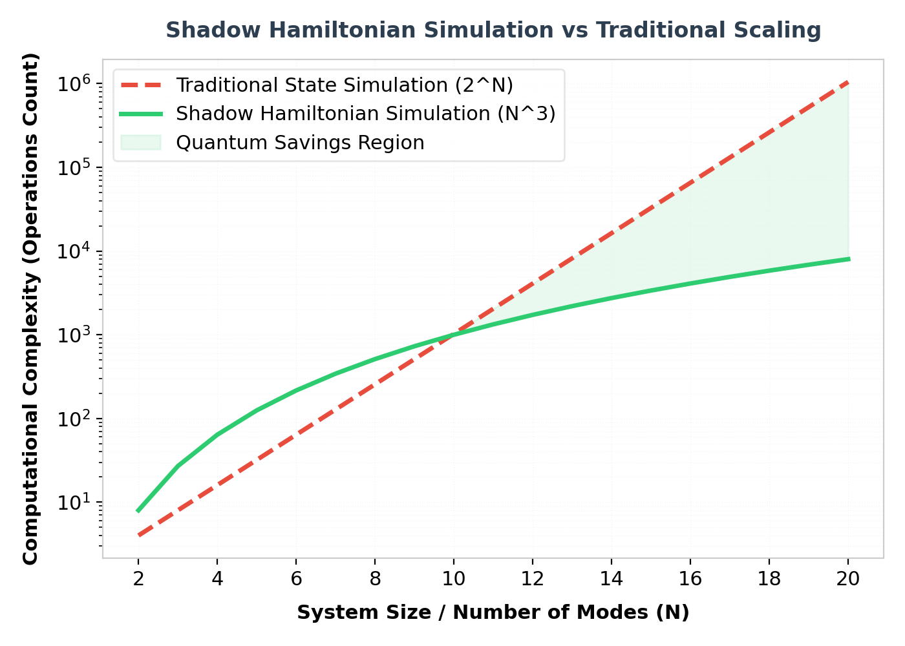

Simulating physical systems under the Schrödinger equation is widely considered one of the primary drivers for building large-scale quantum computers. In traditional quantum simulation, the goal is to prepare the full wave function of the system over time, |ψ(t)⟩, and then perform measurements to extract physical parameters.
However, this approach faces a significant roadblock: for many complex quantum systems (such as high-dimensional bosons or systems of harmonic oscillators), preparing and tracking the entire state requires an exponential amount of resources, even for a quantum computer.
"Rather than storing the full quantum state in memory, what if we only evolved a compressed state that represents the specific physical observables of interest? This is the core premise of Shadow Hamiltonian Simulation."
What is the Shadow State?
The "shadow state" is a compressed quantum state whose amplitudes are directly proportional to the time-dependent expectation values of a specific, limited set of physical operators of interest—such as 1-body or 2-body correlation functions.
Remarkably, this shadow state evolves unitarily under its own Schrödinger equation. By mapping the dynamics of a physical system to this lower-dimensional shadow space, we can simulate the dynamics on a quantum computer with polynomial rather than exponential resources.

Key Advantages & Applications
This framework provides key mathematical and computational advantages:
- Exponential Dimensionality Reduction: Simulates dynamics of exponentially large systems of free bosons or fermions in polynomial time.
- Dynamic Multi-Time Correlators: Allows efficient evaluation of two-time correlation functions and Green's functions, which are vital for condensed matter physics and material science.
- Heisenberg Picture Simulation: Enables studying the time evolution of operators directly, bypassing the need to prepare full physical states.
Mathematical Overview of Shadow Dynamics
Let H be a Hamiltonian acting on a large physical space. Instead of tracking the state vector, we track the set of expectation values:
a_k(t) = ⟨ψ(0)| e^{iHt} O_k e^{-iHt} |ψ(0)⟩
where O_k is a set of operators. The vector of coefficients a(t) is mapped to the amplitudes of a shadow state |Φ_S(t)⟩, which satisfies:
d/dt |Φ_S(t)⟩ = -i H_S |Φ_S(t)⟩
Here, H_S is the effective "Shadow Hamiltonian" which acts on the much smaller shadow space.
Python Demonstration: Evolving a Compressed Qubit System
Below is a Python demonstration showing how a Shadow Hamiltonian representation is generated for a free-fermionic system using custom matrix contractions:
import numpy as np
from scipy.linalg import expm
def generate_shadow_hamiltonian(single_particle_h):
"""
Constructs the shadow Hamiltonian matrix for single-particle dynamics,
representing the evolution of expectation values in a free-fermion system.
"""
N = single_particle_h.shape[0]
# The shadow space dimensions scale quadratically with mode count
shadow_dim = N * N
H_shadow = np.zeros((shadow_dim, shadow_dim), dtype=complex)
# Map operator evolution index: O_ij = c_i^dagger c_j
for i in range(N):
for j in range(N):
idx_from = i * N + j
for k in range(N):
# Apply commutation relations [H, c_i^dagger c_j]
# H_shadow elements represent the coefficients of commutation
idx_to_1 = k * N + j
H_shadow[idx_to_1, idx_from] += single_particle_h[k, i]
idx_to_2 = i * N + k
H_shadow[idx_to_2, idx_from] -= single_particle_h[j, k]
return H_shadow
# Define a simple 3-mode tight-binding hopping Hamiltonian
H_single = np.array([
[0.0, 1.0, 0.0],
[1.0, 0.0, 1.0],
[0.0, 1.0, 0.0]
])
H_shadow = generate_shadow_hamiltonian(H_single)
print(f"Single-particle matrix size: {H_single.shape}")
print(f"Effective Shadow Hamiltonian size: {H_shadow.shape}")
# Verify unitary evolution of the shadow matrix
U_shadow = expm(-1j * H_shadow * 0.5)
print("Shadow evolution operator generated successfully.")